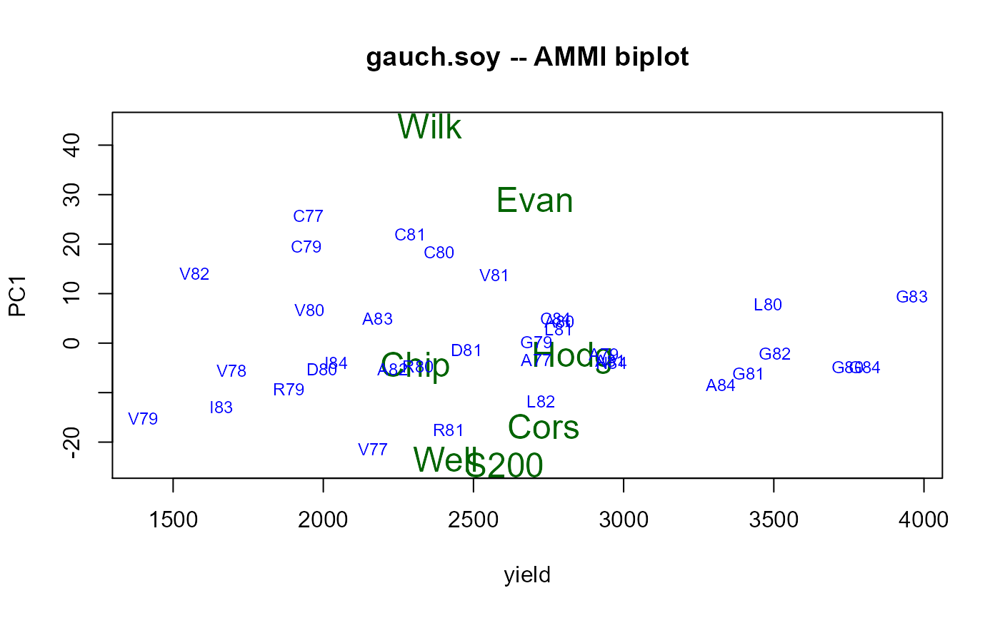

gauch.soy.RdNew York soybean yields, 1977 to 1988, for 7 genotypes, 55 environments (9 loc, 12 years), 2-3 reps.
A data frame with 1454 observations on the following 4 variables.
yieldyield, kg/ha
reprepeated measurement
gengenotype, 7 levels
envenvironment, 55 levels
yearyear, 77-88
loclocation, 10 levels
Soybean yields at 13 percent moisture for 7 genotypes in 55 environments with 4 replicates. Some environments had only 2 or 3 replicates. The experiment was an RCB design, but some plots were missing and there were many other soybean varieties in the experiment. The replications appear in random order and do _NOT_ define blocks. Environment names are a combination of the first letter of the location name and the last two digits of the year. The location codes are: A=Aurora, C=Chazy, D=Riverhead, E=Etna, G=Geneseo, I=Ithica, L=Lockport, N=Canton, R=Romulus, V=Valatie. Plots were 7.6 m long, four rows wide (middle two rows were harvested).
This data has been widely used (in various subsets) to promote the benefits of AMMI (Additive Main Effects Multiplicative Interactions) analyses.
The gen x env means of Table 1 (Zobel et al 1998) are least-squares means (personal communication).
Retrieved Sep 2011 from https://www.microcomputerpower.com/matmodel/matmodelmatmodel_sample_.html
Used with permission of Hugh Gauch.
Zobel, RW and Wright, MJ and Gauch Jr, HG. 1998. Statistical analysis of a yield trial. Agronomy journal, 80, 388-393. https://doi.org/10.2134/agronj1988.00021962008000030002x
None
# \dontrun{ library(agridat) data(gauch.soy) dat <- gauch.soy ## dat <- transform(dat, ## year = substring(env, 2), ## loc = substring(env, 1, 1)) # AMMI biplot libs(agricolae) # Figure 1 of Zobel et al 1988, means vs PC1 score dat2 <- droplevels(subset(dat, is.element(env, c("A77","C77","V77", "V78","A79","C79","G79","R79","V79","A80","C80","G80","L80","D80", "R80","V80","A81","C81","G81","L81","D81","R81","V81","A82","L82", "G82","V82","A83","I83","G83","A84","N84","C84","I84","G84")))) m2 <- with(dat2, AMMI(env, gen, rep, yield)) bip <- m2$biplot with(bip, plot(yield, PC1, type='n', main="gauch.soy -- AMMI biplot"))with(bip, text(yield, PC1, rownames(bip), col=ifelse(bip$type=="GEN", "darkgreen", "blue"), cex=ifelse(bip$type=="GEN", 1.5, .75)))# }